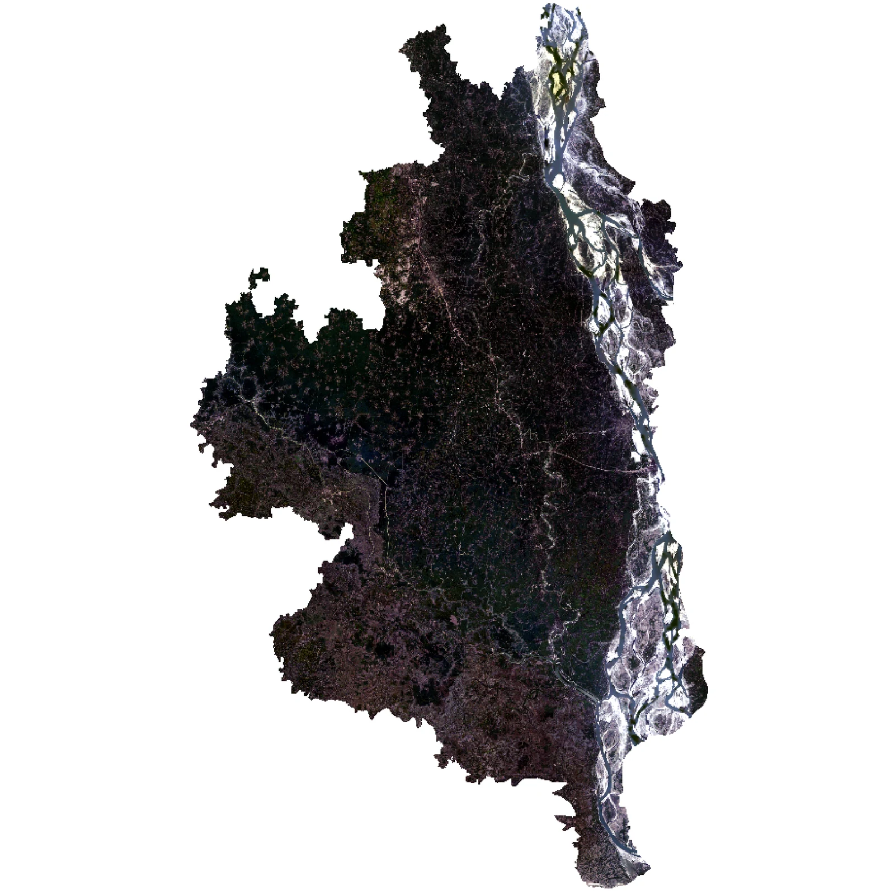
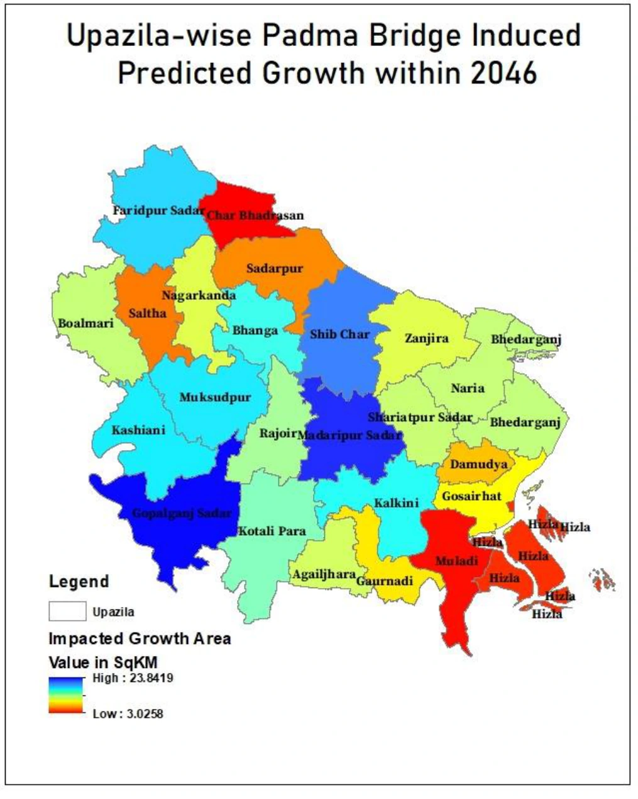
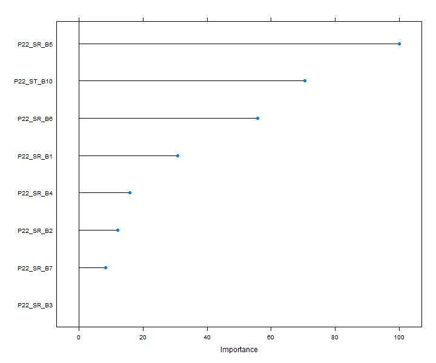

Research question
The study examined how improved connectivity associated with the Padma Bridge may influence future urban development. Because a long post-construction land-use record was not yet available, the research used the Jamuna Bridge region as an analogue for exploring infrastructure-associated growth patterns.
Data and land classification
The classification stage used ten Landsat scenes across the Padma and Jamuna study regions. The workflow compared multiple classification approaches before using Random Forest for the main land-cover series. Spatial predictors represented accessibility, network structure, terrain and development constraints.

Urban-growth modelling
The growth stage used Markov transition logic, weights of evidence and Cellular Automata patch and expander functions in Dinamica EGO. The purpose was to estimate spatial patterns of future development rather than simply extrapolate total urban area.
Key outputs

The final scenario identified uneven growth pressure across the study area, with stronger projected influence in some upazilas than others. This spatial variation is the most useful planning output because it points to where land management, infrastructure and service demand may change most rapidly.

Limitations
The study is a scenario-based spatial model, not a causal estimate of the bridge effect. The analogue approach depends on how comparable the two bridge regions are, and land-cover classification and transition assumptions introduce uncertainty. These limitations are important when interpreting the forecasts as planning scenarios rather than exact predictions.